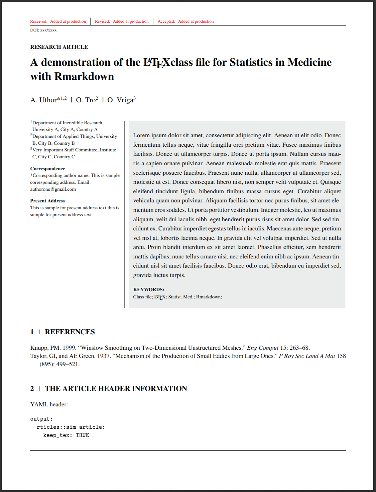

R Markdownの参考文献は通常では文書末尾に挿入されます。しかし、多くの場合は挿入場所を、以下の呪文を唱えた場所に変更できます。
::: {#refs}
:::これは、R Markdownの拡張元となっているMarkdown方言（Pandoc’s Markdown）の機能です。
:::はHTMLでいうところの<div>に相当し、{}の中身は<div>に指定した属性に相当します。
つまり以下に同じ。
<div id=refs></div>Pandocはこの種の<div>を特別扱いして、参考文献の挿入先と認識します。
ただし、これはPandocが自身に組込みのciteprocという参考文献処理エンジンを使う場合に限定されます。
一方、rticlesパッケージの出力形式の一部は、参考文献処理エンジンの既定値がnatbibやbiblatexが変更されています。そこで、出力形式のcitation_package引数にdefaultを渡すと、同様に制御できるようになります1。たとえば出力形式にrticles::sim_article関数を使うなら以下の通り。
output:
rticles::sim_article:
citation_package: default注意点は以下の通り。
参考文献処理エンジンを変更するため、書式が想定と異なる可能性がある
rticles::agu_article関数など一部は、<div>が\hypertarget{refs}{}に変換されてしまい、以下のエラーを発します。
! Undefined control sequence. l.218 \hypertarget {refs}{}
この問題はLuaフィルタで解決できる可能性もあります。
R Markdownが内部で使っているPandocでは2.19.1でpandoc.utils.citeproc関数が追加され、Luaフィルタ内でcitationを解決できるようになりました2。
ちなみにrticles::sim_articleを使った出力例は以下です。
